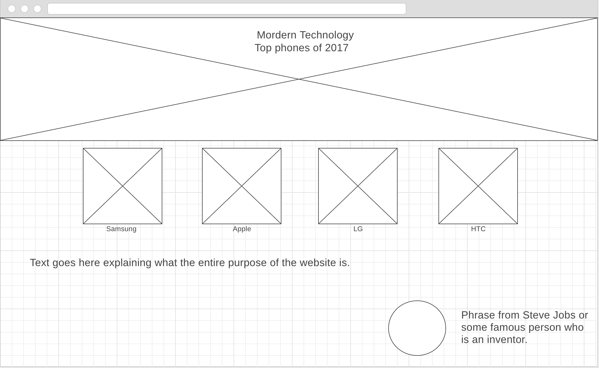
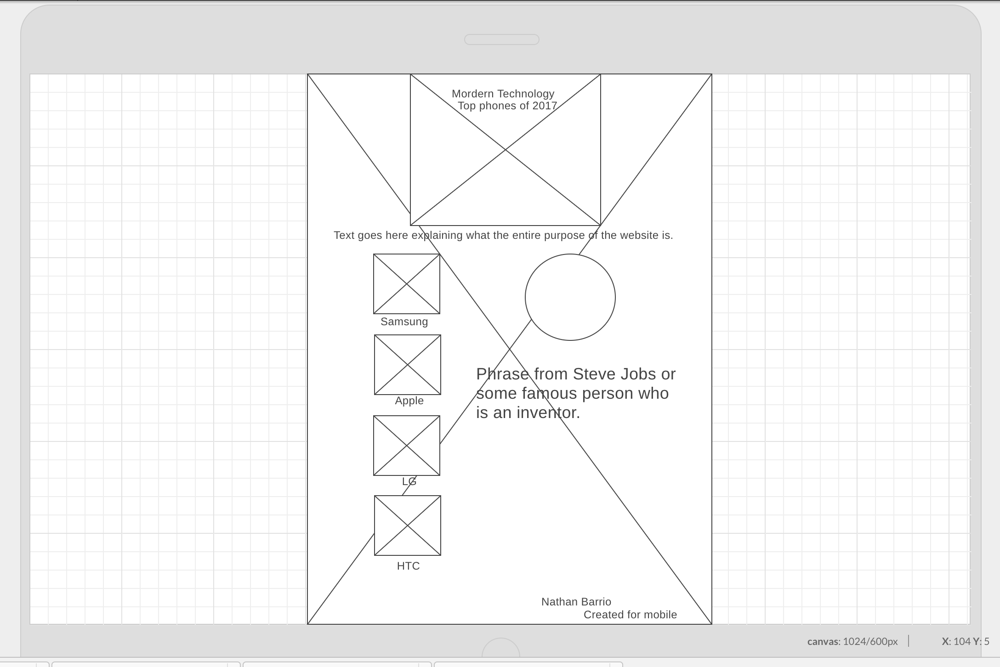

- This webpage is mainly to propose the idea of my 5 pages for my final project. The topic that I have chosen is smartphones. I would like to have a page that informs people of the most popular phone brands out there. Each page will have a brief description of each phone a certain company sells, along with their pictures.
- The purpose of this entire project is 1- To fulfill a project need for my Web Frontend Development Class, and 2- create a page that includes the latest and most popular phones in the market as of this year. People sometimes hessitate to buy a phone because they are unsure of which ones are the best out there. Through this page I will communicate to the users and help clarify their needs through detailed information and specs on each phone. I will also give the positive and negatives sides on each phone.
Target audience:
Teenagers
Adults
The intended target audience and personas that will be looking at this webpage would be teenagers and adults. Why teenagers? Teenagers nowadays have more access than what they used to before. They are starting to have more freedom when it comes to technology, and since phones are so popular and easily acquired, then teenagers would start looking at this site to reference themselves to what phone they should get and compare each phone's specs to the others.
List of possible background and text colors and fonts:
Background Colors
Sienna, Peru, Tan, FireBrick, Chocolate, PapayaWhip.
Text Fonts and Colors
Colors: Black, LightSlateGrey, IndianRed, Tan.
Fonts: Arial, Sans-serif ; Arial Black, Sans-serif ; Avant Garde, Sans-serif ; Big Caslon, Serif ; Baskerville, Serif ; Hoefler Text, Serif ; Lucida Bright, Serif.
Large Wireframe
Mobile Wireframe
The four pages are defined below:
 (PAGE #1)Samsung
(PAGE #1)Samsung
- This page will show Samsung's new phones they have out for sale. I will probably include the prices of each and will list where I got the source. Basically Samsung Galaxy S8, S8+, as well as the last generation and other popular phones that are popular.
 (PAGE #2)Apple
(PAGE #2)Apple
- This page will show Apple's new phones they have for sale. iPhones compete with samsung, so they will definetely have to be on the second page. This page will include all of the recent iPhones starting from the 6, 6s, 6s plus, SE, 7, 7s plus. There is a couple of phones out there, and I might also include the apple watch in this page. Specs will be provided for each phone and accessory.
 (PAGE #3)LG
(PAGE #3)LG
- LG is a major phone company, and not only that but they create other type of electronics. They vary from phones, to home appliances. This will be a fun page because LG has released a lot of different phones. They aren't as popular as Samsung or Apple, but they are still well bought.
(PAGE #4)HTC
- Although HTC is not one of the biggest phone companies out there, I think that it is worthy to select them to be put up in this page. I have heard from those who had them that they are of good quality, and their processors are fast. There are a couple of HTC phones I can inlcude under this page, including some specs for each phone. These phones are attractive and people like them at sight.p